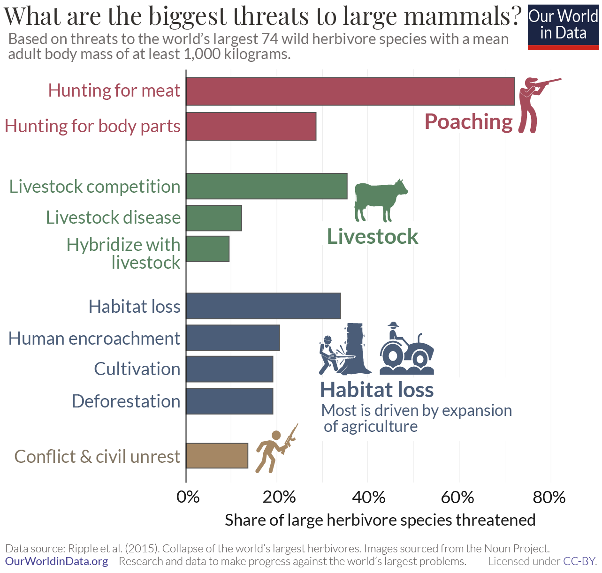

La lutte contre le trafic d'animaux
protégés fait partie d'un objectif du développement durable n
o
15
de l'ONU.
- Lutter contre la demande : la loi interdit le transport ou la
vente de produits d’origine animale (protégés). Cela permet de sensibiliser les
consommateurs aux effets de leur demande. Certains états favorisent l'élevage d'espèces rares afin de diminuer les prélèvements
dans la nature (comme c'est le cas pour certains
poissons d'aquarium).
- Lutter contre le prélèvement : des
brigades armées protègent les animaux menacés par le braconnage. Ces hommes doivent être suffisamment équipés
et rémunérés (pour ne pas prêter main forte aux braconniers). Il faut également
lutter contre le braconnage « à la source », en améliorant le niveau de vie des communautés locales. Pour cela il existe
différentes solutions. La première consiste à favoriser l'écotourisme, l'artisanat, l'agriculture raisonnée.
L'opération Thunderstorm est une réforme mondiale réunissant 93
pays associés à Interpol, l’organisation mondiale des douanes (OMD) en liaison avec le Consortium
international de lutte contre la criminalité liée aux espèces sauvages (ICCWC). Durant le mois de mai 2018, les autorités
se sont concentrées sur des renseignements sur le trafic animal. Grâce à cela, 2000
saisies ont eu lieu pour un montant supérieur à des millions de dollars. La
liste est longue :
● 43 tonnes de viande sauvage (dont de la viande d’ours, d’éléphant,
de crocodile, de baleine et de zèbre)
● 1,3 tonne d’ivoire d’éléphant
● 27 000 reptiles (dont 869 alligators/crocodiles, 9 590 tortues et
10 000 serpents)
● 4 000 oiseaux, parmi lesquels des pélicans, des autruches, des
perroquets et des hiboux
● Plusieurs tonnes de bois
● 48 primates
● 14 félins (tigre, lion, léopard et jaguar)
● Les carcasses de sept ours, dont deux ours
polaires
Voici les deux grandes idées d’Interpol :
“Les investigations ont permis
d'identifier quelques 1400 suspects, déclenchant des arrestations et enquêtes
dans le monde entier.”
“Des milliers d'animaux ont été saisis
lors d'un impressionnant coup de filet mondial contre le trafic d'animaux
sauvages qui a permis l'arrestation de près de 600 suspects”
Cette organisation est la deuxième de la série des opérations « Thunder» cela prouve qu’à l'échelle mondiale les
saisies sont toujours plus importantes mais aussi que les responsables sont
retrouvés et condamnés.
Les
parcs zoologiques participent à plusieurs programmes de conservation
d’espèces. Selon Michel Saint Jalme « Conservation et éducation : voilà les deux grandes missions des parcs
zoologiques ». Selon l’association
mondiale des zoos et aquariums : la WAZA
il
faudrait augmenter le nombre de zoos et de parcs zoologiques qui protégeraient
plus d'espèces menacées.
Les
zoos ont donc des actions ex situ (projet de conservation d’espèces en-dehors de son habitat naturel) et in situ (la conservation des
animaux menacés dans leur milieu naturel).
Certains
zoos envoient leur employé sur zone pour apprendre le comportement animal
dans son habitat naturel et transmettre aux populations locales l'idée
de préservation.
Un programme de reproduction a été
créé à l'échelle européenne, cela permet de gérer la génétique des espèces et leurs démographies pour le long terme. En voici 2
exemples : - La panthère de Perse a été réintroduite dans
les montagnes du Caucase d’où elle avait totalement disparu.
L’ibis chauve,
oiseau en danger d’extinction, a été introduit en Andalousie grâce à
l’action combinée de sept zoos européens qui
l’ont élevé en captivité.
Les zoos participent à la conservation in
situ de différentes façons. C’est le financement de programmes et des associations
pour préserver espèces et habitats. Ils peuvent aussi envoyer du personnel
pour travailler sur ces programmes et apporter des savoir-faire.
Les zoos ont trois missions.
La première consiste à sensibiliser les visiteurs sur la protection animale. La deuxième mission est la protection et la conservation des espèces
animales et végétales. Et la dernière est une directive européenne 1999
et un arrêté de 2005 qui imposent aux zoos la conservation des espèces, la
recherche pour favoriser protection et conservation animale, et le programme
d’éducation du public.
A
l’échelle mondiale différentes associations existent et ont pour but de protéger
les habitas naturels,
les espèces endémiques, les espèces menacées mais
également de trouver des solutions durables
entre la coexistence de animaux et
de l’homme.
World Wide Fund for Nature : Le WWF créé en 1961 est une ONG pour la
protection de
l’environnement et impliquée dans le développement durable. Le
but est de sauvegarder les
écosystèmes et leurs espèces.
IFAW (Fonds international
pour la protection des animaux) créé en 1969, cette association a
pour
but d’améliorer le bien-être des animaux sauvages et des animaux domestiques
dans
le monde entier. Cela passe par la réduction de l’exploitation commerciale
des animaux, la
protection de leur habitat.
Greenpeace est une organisation
internationale. Créé en 1971 Greenpeace est un groupe luttant contre les nombreuses
menaces de l’environnement et de la biodiversité. www.greenpeace.fr
A
l’échelle européenne différentes associations existent également.
L’EAZA, Association
Européenne des Aquariums et Zoos est née en 1988. Elle a pour but de
faciliter les échanges entre les différents parcs animaliers d’Europe. L’objectif
est de veiller sur le bien-être des animaux, les conditions de vie des
spécimens en captivité.
Eurogroup for
Animals a pour but de protéger
les animaux de la ferme, de compagnie. Elle fait pression sur l’état pour créer
des lois imposant le bien-être animal, les conditions d’abattage des animaux
d’élevage, des conditions sur le mode de vie des animaux en captivité.
Il existe d’autres associations comme trente
millions d’amis qui est voué à la protection animale contre les violences
humaines, contre l’abandon mais aussi cette association lutte contre les modes
de vie parfois non adaptés aux animaux. Elle peut même parfois lutter contre le
trafic animal par exemple lors de saisies de chiots venant de Roumanie et leur
protection jusqu’à leur sevrage.
La protection, la préservation ou encore la conservation sont des termes à la mode dans notre société depuis 10 ans, cela se traduit par exemple par la multiplication des mouvements d'écologie. Premièrement, on pourrait se demander pourquoi cela est nécessaire ? Les graphiques que vous allez voir ci-dessous permettent d'observer l'impact des activités humaines sur les espèces.
 Les graphiques précédents ont dû vous faire réaliser l'impact massif de l'Homme sur les êtres vivants, sur les territoires, sur notre planéte en voici les principales causes :
Selon our world in data : "[Le braconnage est de loin la plus grande menace pour les éléphants d'Afrique et d'Asie. Les éléphants sont tués pour leurs trompes et leurs défenses. L'ivoire est un commerce lucratif.Il n'y a pas que les éléphants qui sont sous pression. Le braconnage est la principale menace pour tous les grands mammifères. Mais comme nous l'avons vu à partir de quelques exemples au niveau des pays : la protection de ces espèces est possible : l'Inde a réussi à protéger et à restaurer les populations d'éléphants. La Namibie, le Zimbabwe et l'Angola ont également réussi à inverser la tendance. Dans notre article de suivi, nous examinerons l'ampleur du braconnage mondial et ce que nous pouvons apprendre des pays qui ont réussi à y mettre fin.]"
Pour en savoir plusLa création de zones protégées s'est multipliée depuis quelques années, les cartes ci-dessous l'illustrent. Néanmoins, ne sommes-nous pas en train de tomber dans l'extréme ? L'accumulation exhaustive de zonages pourrait jouer le rôle inverse ....
Si la conservation est réfléchie et utile, elle permet parfois de sauver des espèces !

created with
WYSIWYG HTML Editor .